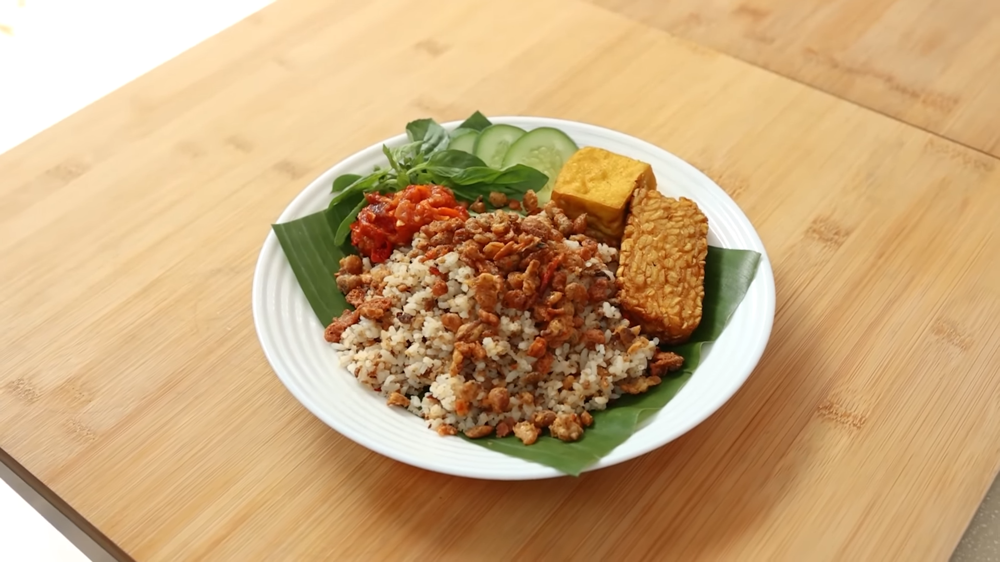

Back
Nasi Tutug Oncom

A rustic soul-food staple from West Java. This dish features fluffy
steamed rice tossed with grilled or fried Oncom—a traditional fermented
legume cake unique to Indonesia. Infused with aromatic ginger, garlic, and
kencur (aromatic ginger), it offers a smoky, savory, and deeply umami
flavor profile that is quintessentially Sundanese.
Ingredients
-
Tutug Oncom ingredients:
- 3 clove garlic
- 5 pc shallot
- 8 cm aromatic ginger
- 2 tsp salt
- 1.5 tbsp sugar
- 1 tsp MSG
- 5 pc red curly chili
- 360 g oncom
- 1 pc bay leaf
- 1 pc kaffir lime leaf
-
Crispy Tutug Oncom ingredients:
- 35 g all-purpose flour
- 35 g cornstarch
- ½ tsp baking powder
- 1 pc egg
- 50 ml coconut milk
- 80 ml water
- ½ tsp salt
- ½ tsp chicken powder
- ⅓ tutug oncom
-
Others:
- Rice + 2/3 tutug oncom
- Fried Tempeh
- Fried Tofu
- Tomato Sambal
- Cucumber
- Lemon basil
Steps
- Slice the oncom, then toast it. Place in a bowl and let cool.
-
On a stone bowl, add garlic, shallots, aromatic ginger, red chili, and
salt. Mash until smooth.
- Heat some oil, then crumble the cooled oncom.
-
Sauté the spices until fragrant, then add the oncom, sugar, MSG, lime
leaf, and bay leaf. Cook on medium heat until crisp. Set aside.
- Mix ⅔ of the tutug oncom into hot rice. Mix well.
-
In a bowl, combine flour, cornstarch, chicken powder, salt, baking
powder, egg, and coconut milk. Add water in slowly while stirring. Mix
well.
- Add the rest of the tutug oncom. Mix with a fork.
-
Heat the oil. Splatter the batter with a fork into the oil slowly. Fry
on medium heat until crispy. Set aside.
- Nasi Tutug Oncom is ready to serve.